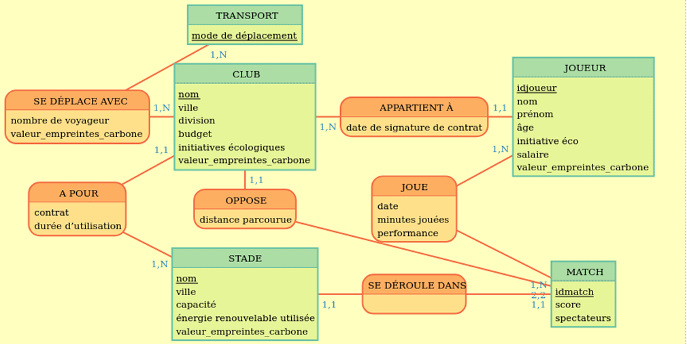

Base de Données (Projet universitaire)
Conception, modélisation et déploiement — travail d'équipe et évolution du schéma.
Contexte
Projet réalisé en équipe dans le cadre d'un cours de bases de données. L'objectif était de concevoir une base relationnelle, d'écrire le modèle conceptuel (MCD), puis le modèle logique (MLD), et enfin déployer la base avec PostgreSQL.
Rôles & responsabilités
- Modélisation (MCD / MLD)
- Écriture des scripts SQL (tables, contraintes, index)
- Élaboration des procédures stockées et vues
- Scripts d'import et de migration
Technologies
PostgreSQL · pgAdmin · SQL · DDL/DML · Git
Points marquants
- Conception normalisée jusqu'à la 3ème forme normale
- Gestion des clés étrangères et intégrité référentielle
- Requêtes complexes : jointures multiples, agrégations, fenêtres
- Export / import et scripts de peuplement

Extraits
Exemple de table, vue et procédure issue du projet.
-- Exemple : création d'une table CREATE TABLE Transport ( mode_de_deplacement VARCHAR(255) PRIMARY KEY ); CREATE TABLE Club ( nom VARCHAR(255) PRIMARY KEY, ville VARCHAR(255), division VARCHAR(255), budget DECIMAL(15, 2), initiatives_ecologiques TEXT, valeur_empreinte_carbone DECIMAL(10, 2) );
Améliorations futures
- Automatisation des migrations (Flyway / Liquibase)
- Sécurisation : gestion des rôles et des permissions
- Tests d'intégrité et d'insertion en masse